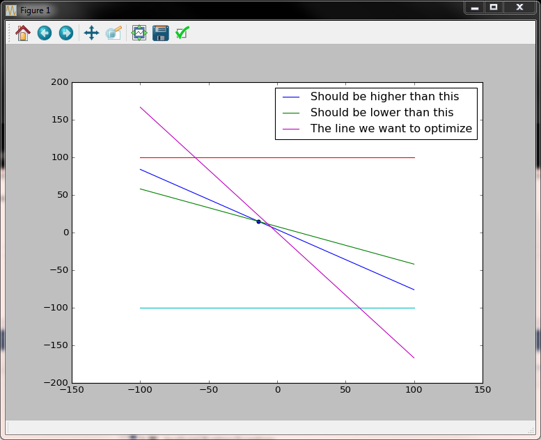
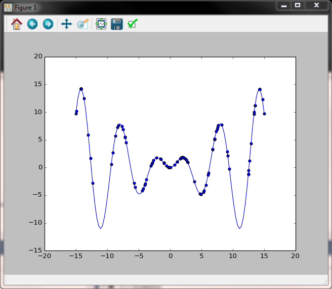
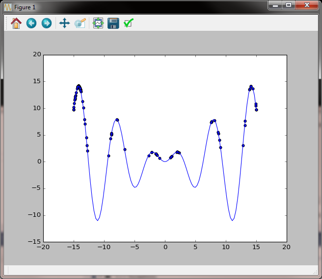
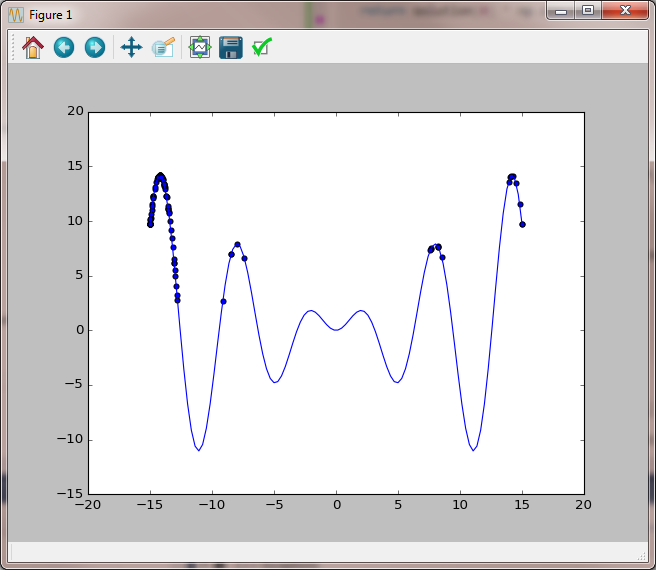
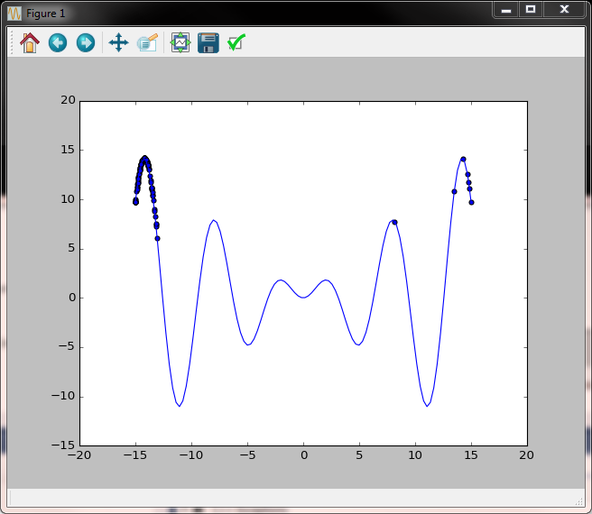
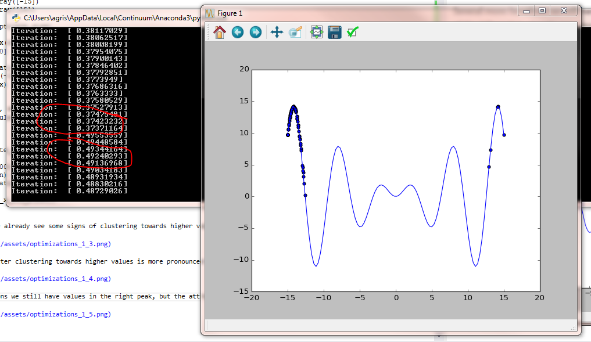

Nature Inspired Optimizations
This post is about optimization algorithms. I am going to present the general structure of a nature-inspired
algorithm which blends several methods in a single code base: population evolution (mutation) based on a stochastic process, elite selection and maintenance and
variable mutation rate to escape local optima.
Algorithm usage
Several steps involved:
- Define the function that you want to optimize. The function can have several variables and should contain also the set of constraints.
- Define the interval on which the algorithm is run. There should be an interval for each variable.
- Initialize the process and run it for a certain number of steps.
- Observe the results.
Optionally, one can run the algorithm several times to compute the error distribution.
Below is an example which includes all the steps above. We want to calculate the maximum for a function of two parameters given a set of constraints that need to be optimized.
We run the algorithm several times, compute the expected value and the standard variation and then plot the result.
Notes:
- In the function to optimize we return
np.finfo(dtype=np.float).minfor the values of x and y not satisfy the constraints asnp.finfo(dtype=np.float).min.Xandyare insolution[0]andsolution[1]respectively. - The function below demonstrates the algorithm works even on very tight solution intervals. Once the first possible solution is found, the algorithm knows how to evolve it.
def evaluate_population_with_constraints(solution):
"""The function with constraints that we want to maximize"""
# conditions
ret = 5 * solution[0] + 3 * solution[1]
mask = np.ma.masked_greater(20 * solution[0] + 25 * solution[1], 100, False)
if type(mask.mask) is np.ndarray:
ret[mask.mask] = np.finfo(dtype=np.float).min
mask = np.ma.masked_less (10 * solution[0] + 20 * solution[1], 160, False)
if type(mask.mask) is np.ndarray:
ret[mask.mask] = np.finfo(dtype=np.float).min
return ret
no_of_variables = 2
pop_size = 20
lower_bound = np.array([-100, -100])
upper_bound = np.array([100, 100])
returns = np.empty((2, 10))
for j in range (0, returns.shape[1]):
try:
optim_evolve = create_optimization(pop_size, no_of_variables,
lower_bound, upper_bound, evaluate_population_with_constraints)
ret = []
for i in range(0, 100):
(ret, population) = optim_evolve()
print(ret, evaluate_population_with_constraints(ret))
returns.T[j] = ret
except Exception as e:
returns.T[j] = np.nan
print(e.args)
print (np.nanmean(returns, 1), np.nanstd(returns, 1))
import matplotlib.pyplot as plt
x = np.linspace(-100, 100, 1000)
y1 = -(20 * x - 100) / 25
y2 = -(10 * x - 160) / 20
y3 = np.array([100 for i in range(0, x.size)])
y4 = np.array([-100 for i in range(0, x.size)])
y5 = - 5 * x /3
plt.plot(x, y1, label="Should be higher than this")
plt.plot(x, y2, label="Should be lower than this")
plt.plot(x, y3)
plt.plot(x, y4)
plt.plot(x, y5, label="The line we want to optimize")
plt.scatter(np.array([ret[0]]), np.array([ret[1]]))
plt.legend()
plt.show();
Output:

In the image above it is visible the solution space is very small (the triangle) yet the point for which the target function is maximized is found.
Algorithm description
The algorithm has two main parts: initialization and the evolutionary step.
Initialization
- Randomly initialize the population within the given interval - for this we use the uniform distribution.
- Compute the target function result for the randomly selected population.
- Initialize the randomness of the initial evolutionary step to be performed later.
- Compute the worst and best indices and initialize the elite population.
def create_optimization(pop_size, no_of_variables, lower_bound, upper_bound, evaluate):
def generate_population(lower_bound, upper_bound, pop_size):
return lower_bound +
np.random.uniform(size=pop_size) * (upper_bound - lower_bound)
def worst_best(array):
min_array = np.min(array)
# avoid exception
if min_array == np.finfo(dtype=np.float).min:
min_idxs = np.where(array == min_array)
else:
# tunable parameter below
min_idxs = np.where(array <= (4.0 * min_array + np.max(array)) / 5.0)
max_idx = np.argmax(array)
return (min_idxs, max_idx)
population = []
values = []
iteration = []
best_so_far = []
def init_population():
nonlocal population
nonlocal values
nonlocal iteration
population = np.array([generate_population(lower_bound[i], upper_bound[i], pop_size)
for i in range(0, no_of_variables)])
values = evaluate(population)
iteration = np.ones(no_of_variables) * pop_size
init_population()
if np.where(values == np.finfo(dtype=np.float).min)[0].size == values.size:
raise Exception("No initial population found")
(worst, best) = worst_best(values)
elite_value = values[best]
elite_tuple = population.T[best]
best_so_far.append((elite_value, elite_tuple))
[....]
The code above already contains the first parameters to play with, in the form of the following statement:
min_idxs = np.where(array <= (4.0 * min_array + np.max(array)) / 5.0). This means the function returns as worst indices all indices for which the function value is lower than the specific value set by the formula.
Evolutionary step
- Evolve the population by adding random Gaussian noise to it.
- Clip to the interval - this is an optional step. Another solution would be to have the function to optimize return
MIN_FLOAT
for all values outside the domain, which would allow in specific conditions the algorithm to drift to a optimum outside of the initial interval. - Evaluate the function for each member of the population.
- Find the worst and the best. Add the best to the elite group, sort the group in reverse order and only preserve the top X values.
- Replace the worst with a selection from the best group. An option for steps 4 and 5 is to only preserve the best value to replace the worst.
- Decrease the interval for the Gaussian noise that will be added in step 1.
- Repeat until the solution is satisfactory or until a certain number of steps has been performed.
Here is the code:
[....]
def evolve(population):
nonlocal iteration
# add random Gaussian noise
rnd = np.transpose(np.random.normal(0, (upper_bound - lower_bound)
/ iteration, size=population.shape[::-1]))
pop_evolved = population + rnd
# to delete
print("Iteration: ", (upper_bound - lower_bound) / iteration)
# bring everything in range
# this part is not necessary; depends on the algorithm
# conditions could be put in the function we want to optimize, remove this part,
# consider the interval only in the beginning
# then let the solution drift towards the optimum
clip(lower_bound, upper_bound, pop_evolved)
# prepare next iteration; try to decrease a little bit the randomness
# all this part can be changed to something else. The idea is to have some decreasing randomness.
# another good function might be |sin(x) / x|
increment = 1 / np.sqrt(iteration)
std_rnd = np.std(rnd, 1)
diff = ((np.max(pop_evolved, 1) - np.min(pop_evolved, 1))/population.shape[1])
idx_to_change = np.union1d(np.where(increment < 1e-2)[0], np.where(std_rnd < diff)[0])
iteration = iteration + increment
if idx_to_change.size > 0:
iteration[idx_to_change] = iteration[idx_to_change] * 0.75 + 0.25
return pop_evolved
def replace_from_best_so_far(population, idxs):
nonlocal best_so_far
for i in idxs:
# fake a little bit a Pareto distribution with 5 buckets -> tunable parameter
# best_so_far is sorted backwards, so we want to increase the probability of
# selecting from the first part
# if there are two or more very close maximums,
# one of them will gain dominance over the other.
bucket = np.random.randint(1, 6)
j = np.random.randint(0, min((len(best_so_far) / bucket) + 1, len(best_so_far)))
population.T[i] = best_so_far[j][1]
def evolve_algorithm():
nonlocal elite_value
nonlocal elite_tuple
nonlocal population
nonlocal iteration
nonlocal values
nonlocal best_so_far
population = evolve (population)
values = evaluate(population)
# remove all values outside the range
outsite_range = np.where(values == np.finfo(dtype=np.float).min)
if outsite_range[0].size > 0:
inside_range = np.where(values != np.finfo(dtype=np.float).min)[0]
if inside_range.size == 0 and len(best_so_far) == 0:
init_population()
replace_from_best_so_far(population, outsite_range[0])
# all should be OK now
values = evaluate(population)
[worst_idxs, best_idx] = worst_best(values)
elite_value = values[best_idx]
elite_tuple = population.T[best_idx]
best_so_far.append((elite_value, elite_tuple))
best_so_far.sort(key = lambda tuple: tuple[0], reverse = True)
# another tunable parameter
# larger numbers will decrease the probability of atractors, but will also decrease convergence
best_so_far = best_so_far[ : int(1.5 * population.size)]
replace_from_best_so_far(population, worst_idxs[0])
(elite_value, elite_tuple) = best_so_far[0]
return (elite_tuple, population)
return evolve_algorithm
In the code above, other options for tuning the algorithm become apparent:
- As mentioned before, clipping to the domain of reference for each of the variables can be deferred to the supplied
evaluatefunction. - The function of decreasing the randomness for the Gaussian noise can be changed. In this case I opted for a slight decrease given by the formula
(upper_bound - lower_bound) / iterationwith
iterationslowly increasing by an incrementincrement = 1 / np.sqrt(iteration). I also provisioned a back-out condition, which cutsiterationto a lower value in case the search interval is not properly covered. - Picking from the
bestarray could be also changed. I opted for a Pareto distribution with higher probability for numbers to be selected from the bucket closer to index 0. This, however, has side effects. Provided that the distribution has two maximums, one of them will gain dominance over the other and will become attractor for all points in subsequent iterations - see example withx*sin(x). - The size of the
best_so_fararray. The choice of 1.5 times the population size is based on experiments I made myself. Larger numbers will decrease the probability of attractors but will also decrease the convergence of the algorithm.
Two other usecases
Computing the Minkovsky center
Here is a link to Mikvosky space. This can be very handy in statistics for linearized regression models for exponential or power-law distributions (logarithms are applied to change the distribution model from exponential or power law to linear and then linear coefficients are computed for this model).
In these cases, the least squares method (Minkovsky of order 2) may give much larger errors than simply minimizing the model error (Minkovsky of order 1).
no_of_variables = 1
pop_size = 20
lower_bound = np.array([-100])
upper_bound = np.array([100])
arr = np.random.normal(0, 10, 1000)
mink_ret = np.empty(pop_size)
def evaluate_population_minkovski_center(solution, exponent):
global arr
global mink_ret
for i in range(0, solution.shape[1]):
mink_ret[i] = np.sum(np.abs(arr - solution[0][i]) ** exponent)
return -mink_ret
optim_evolve = create_optimization(pop_size, no_of_variables,
lower_bound, upper_bound,
lambda solution : evaluate_population_minkovski_center(solution, 2))
ret = []
for i in range(0, 100):
(ret, population) = optim_evolve()
print(ret, np.mean(arr))
Computing the maximum for a function with two maximums
The function we consider is x * sin(x) on the [-15, 15] interval. Below is the code, then the comments.
no_of_variables = 1
# attention also to the population size -
# a population size too close to the nyquist rate may miss some possible maximums
pop_size = 100
lower_bound = np.array([-15])
upper_bound = np.array([15])
solution = np.empty(pop_size)
def evaluate_x_sin_x(solution):
return solution[0] * np.sin(solution[0])
def plot(ret, population):
x = np.linspace(-15, 15, 100)
y = x * np.sin(x)
plt.plot(x, y)
plt.scatter(ret, evaluate_x_sin_x(ret))
plt.scatter(population, evaluate_x_sin_x(population))
plt.show()
optim_evolve = create_optimization(pop_size, no_of_variables, lower_bound, upper_bound, evaluate_x_sin_x)
ret = []
for i in range(0, 100):
(ret, population) = optim_evolve()
plot(ret, population)
print(ret, evaluate_x_sin_x(ret))
Second iteration - we already see some signs of clustering towards higher values.

Several iterations later clustering towards higher values is more pronounced but we also notice the side effect of the left peak becoming an attractor.

Several more iterations we still have values in the right peak, but the attraction of the left peak is already very strong.

A new snip towards the end of the evolution and one after the algorithm has dynamically increased the randomness added to the population to explore new possible solution spaces.


Next Steps
Tweaking an optimization algorithm can take a lot of time. Some ideas on how to continue:
- In the evolve population step, for multiple variable optimization problems, consider generating new solutions based on mixing two or more existing solutions (eventually taken from the best_so_far array). Eg. Take two solution vectors from the population [solution[i][0], solution[i][1], ... solution[i][n]] and [solution[j][0], solution[j][1], ... solution[j][n]] and, in the evolve step, instead of (or in addition to) adding random noise to these two solutions, consider other two combinations (children) for the next step. An example of a child could be: [solution[i][0], solution[j][1], solution[i][2], ...]. (this is a genetic algorithm inspired step).
- Look deeper at the clustering. Think about evolving the step around clusters instead of the whole population vector (pop_evolved in def evolve(population)). This would give better precision in the final steps where the standard deviation of the random array should be very small (if we look at the sine example, the standard deviation is very high when the two extreme points are considered in the solution). Eventually consider dropping some points when they are too close to improve speed and have more iteration steps.
- Consider gradient descent for the function in the later steps, when / if dicontinuities have been avoided and clusters have been formed. Gradient descent is evolves faster towards the solution but has problems escaping local maximums or discontinuities.